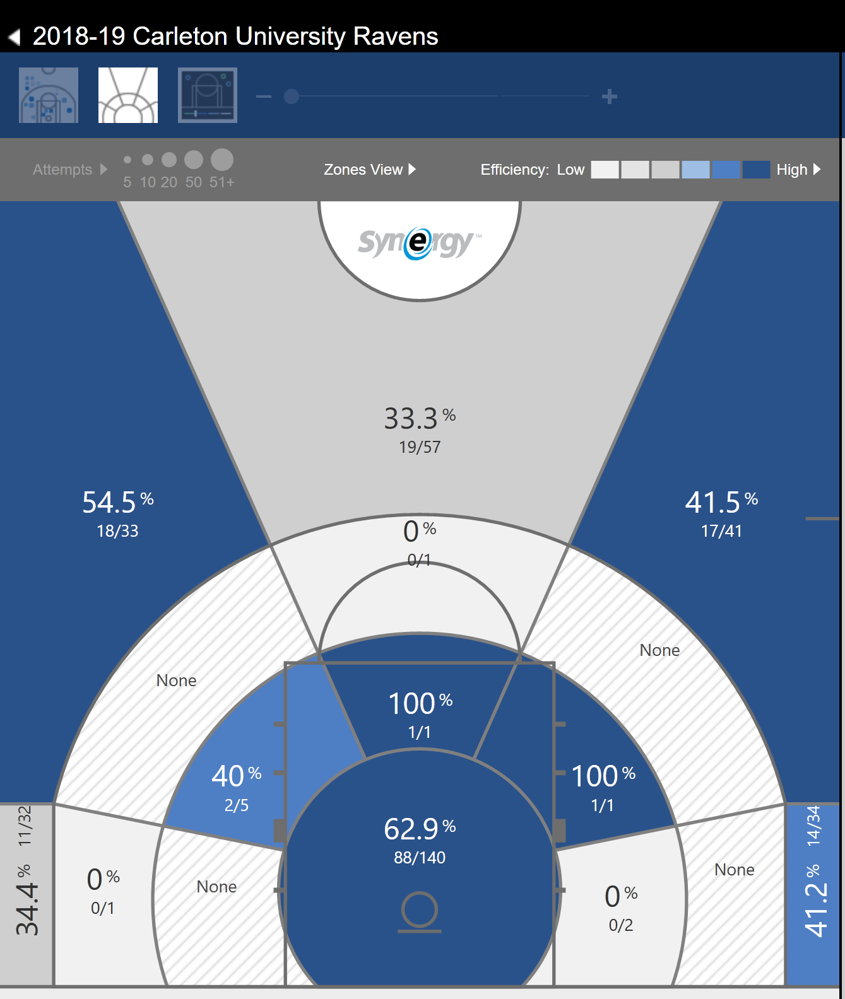
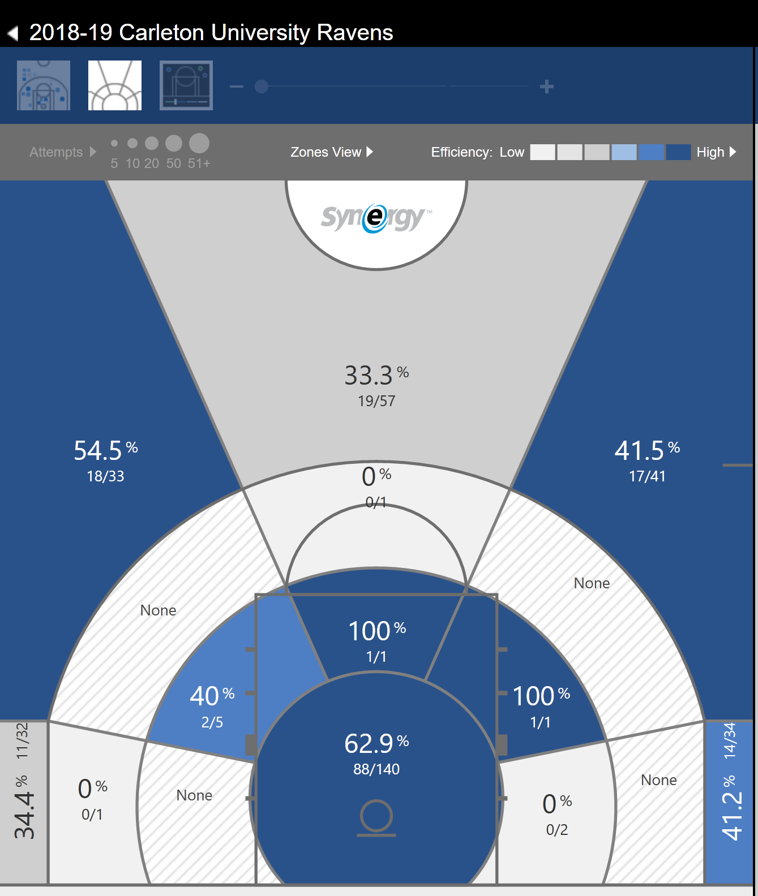

Chapter 4 Classification of Wins
In machine learning and statistics, classification is a supervised learning approach in which the machine learns from the data input given to it and then uses this learning to classify new observations. In this case, classification can be used to identify a win and loss and also to predict whether a game will be a win or loss. That means we want to identify which variables are the most important in distinguishing a win (or a loss_. There are many types of classification techniques such as Random Forests, Support Vector Machines, Logistic Regression, XGBoost, etc..
4.1 Random Forests
Random forest is an ensemble learning method for classification. Ensemble methods are very effective because they use multiple learning algorithms to obtain better predictive performance than could be obtained from any of the learning algorithms alone. A random forest consists of a large number of decision trees that operate as an ensemble. Each individual tree in the random forest gives a prediction of outcome and the class with the most votes becomes the model’s prediction[11]. The reason why a random forest is a great technique is because a large number of relatively uncorrelated models (trees) operating as a committee will outperform any of the individual constituent models. Random forests also give an importance score for all the features used in the model. A standard procedure is to first use all the variables and then use feature importance to narrow the model down to get more accurate results.
4.1.1 Model 1
In this random forest model we are predicting wins using the following predictors: Assists,DefensiveRebounds,TotalRebounds,Turnovers,PushBallfromTurnover,Steals, PressOffense,UnguardedJumpShots,AllFreeThrows,P&RBallHandler-SingleCovered,Cuts, GuardedJumpShots,ShortJumpShots,TransitionOffense,LongJumpShots,Transitions,SpotUps, P&RBallHandler-DefenseCommits,PushBallfromShotAttempt,PushBalltoHalfCourtOff., OffensiveRebounds,MiscellaneousPossessions,Isolation-SingleCovered,Post-Up-SingleCovered, MediumJumpShots,Blocks,OffScreens,Off.Reb.-PutBacks,Handoffs,Off.Reb.-ResetOffense, TransitionTurnover,P&RRollMan,Isolation-DefenseCommits,Post-Up-DefenseCommits, Post-Up-HardDoubleTeam,P&RBallHandler-Traps. The model is trained on a train set which is a random sample (without replacement) of 70% of the dataset and tested on a random sample of 30% of the dataset. The accuracy score is obtained below.
Accuracy: 0.7477064220183486A very important perk of the random forest algorithm is it allows us to obtain the Feature importance to let us know which variables were the most important for creating the model, i.e. which features are the most important in classifying and predicting wins. A table of the Feature importance from this model is shown below.
| Feature | Feature Importance Value |
|---|---|
| Assists | 0.096881 |
| DefensiveRebounds | 0.062817 |
| TotalRebounds | 0.059851 |
| Turnovers | 0.056744 |
| PushBallfromTurnover | 0.044454 |
| Steals | 0.038865 |
| PressOffense | 0.037174 |
| Unguarded Jump Shots | 0.030118 |
| AllFreeThrows | 0.029086 |
| P&RBallHandler-SingleCovered | 0.028485 |
| Cuts | 0.027246 |
| GuardedJumpShots | 0.026854 |
| ShortJumpShots | 0.025915 |
| TransitionOffense | 0.025691 |
| LongJumpShots | 0.023443 |
| Transitions | 0.023180 |
| SpotUps | 0.023102 |
| P&RBallHandler-DefenseCommits | 0.022575 |
| PushBallfromShotAttempt | 0.022505 |
| PushBalltoHalfCourtOff. | 0.022279 |
| OffensiveRebounds | 0.022109 |
| MiscellaneousPossessions | 0.020995 |
| Isolation-SingleCovered | 0.020878 |
| Post-Up-SingleCovered | 0.020679 |
| MediumJumpShots | 0.019900 |
| Blocks | 0.019759 |
| OffScreens | 0.018904 |
| Off.Reb.-PutBacks | 0.017528 |
| Handoffs | 0.017504 |
| Off.Reb.-ResetOffense | 0.017282 |
| TransitionTurnover | 0.017150 |
| P&RRollMan | 0.015011 |
| Isolation-DefenseCommits | 0.013565 |
| Post-Up-DefenseCommits | 0.013291 |
| Post-Up-HardDoubleTeam | 0.012348 |
| P&RBallHandler-Traps | 0.005832 |
Note: since random forests take samples randomly, the accuracy will vary depending on the seed chosen.
4.1.2 Model 2
In this random forest model we are predicting wins using a refined selection of predictors: Assists,DefensiveRebounds,TotalRebounds,Turnovers,Steals,PushBallfromTurnover,PressOffense,AllFreeThrows,UnguardedJumpShots,ShortJumpShots,Cuts,LongJumpShots, Transitions,GuardedJumpShots,PushBallfromShotAttempt,AllP&RBallHandler,SpotUps, AllPost-Up,PushBalltoHalfCourtOff.,AllOffensiveRebounds,MiscellaneousPossessions, AllIsolation,OffScreens,Blocks,MediumJumpShots,Isolation-SingleCovered,Handoffs.The model is trained on a train set which is a random sample (without replacement) of 70% of the dataset and tested on a random sample of 30% of the dataset. The accuracy score is obtained below.
Accuracy: 0.7477064220183486A very valuable component of the Random Forest algorithm is feature importance. Since a Random Forest is a collection of Decision trees and so the splitting criterion used to choose which variable to split on is used to rank the importance of variables. For example, if the decision tree first splits using the Assists variable for most of the decision trees, then Assists would be an important variable. The decision tree creates splits by identifying the variables which create the best homogeneous sets.
A table of the Feature importance from this model is shown below
| Feature | Feature Importance Value |
|---|---|
| Assists | 0.103865 |
| DefensiveRebounds | 0.079669 |
| TotalRebounds | 0.064047 |
| Turnovers | 0.062428 |
| Steals | 0.059118 |
| PushBallfromTurnover | 0.048081 |
| PressOffense | 0.039639 |
| AllFreeThrows | 0.034666 |
| Unguarded Jump Shots | 0.033493 |
| ShortJumpShots | 0.032340 |
| Cuts | 0.031976 |
| LongJumpShots | 0.030290 |
| Transitions | 0.029443 |
| GuardedJumpShots | 0.029287 |
| PushBallfromShotAttempt | 0.028180 |
| AllP&RBallHandler | 0.028030 |
| SpotUps | 0.027917 |
| AllPost-Up | 0.027047 |
| PushBalltoHalfCourtOff. | 0.025952 |
| AllOffensiveRebounds | 0.025533 |
| MiscellaneousPossessions | 0.024643 |
| AllIsolation | 0.024239 |
| OffScreens | 0.023363 |
| Blocks | 0.022834 |
| MediumJumpShots | 0.022212 |
| Isolation-SingleCovered | 0.021883 |
| Handoffs | 0.019824 |
Assists are the most important feature in both models for classifying whether a game is a win or loss.
4.2 Logistic Regression
Logistic Regression is a form of regression that is used when the response variable is a categorical variable [12]. In this case it is a binary value (e.g. Success or Failure). The game by game data can be used to create a model that predicts Wins.
4.2.1 Model
The same features are used in this model as the second model in the Random Forests section. Logistic regression will be used to classify and then predict wins. The equation is below
\[ Win = \beta_0 + {\beta_1*Assists} + ... + {\beta_{27}*Handoffs} \]
Again, the model is trained on a train set which is a random sample (without replacement) of 70% of the dataset and tested on a random sample of 30% of the dataset. The accuracy score is obtained below.
Accuracy: 0.7821100917431193Figure 4.1: Feature Importance from Logistic Regression Model.
The feature importance from Logistic Regression differs from Random Forests.Although, Defensive Rebounds, Assists, and Turnovers are still on the top of the list. In general, turnovers negatively impact teams and can be an important feature to distinguish teams that are less likely to win if they make more turnovers.
4.2.2 Assists
A dataset has been modified to subtract the home team’s statistics from the away team’s statistics for each game so that there are differential statistics. The differential statistics were compared to see which contributed to the highest proportion of wins.
| Differential Statistics | Proportion of Wins |
|---|---|
| Positive Assists Differential | 845/1171 = 72.2% |
| Positive Rebounds Differential | 817/1171 = 69.8% |
| Negative Turnovers Differential | 726/1171 = 62% |
4.2.2.1 Risk Ratio & Odds Ratio
2 by 2 table analysis:
------------------------------------------------------
Outcome : Win
Comparing : Positive Assists Differential vs. Negative Assists Differential
Win Lose P(Win) 95% conf. interval
Positive Assists Differential 845 326 0.7216 0.6952 0.7465
Negative Assists Differential 326 845 0.2784 0.2535 0.3048
95% conf. interval
Relative Risk: 2.5920 2.3481 2.8613
Sample Odds Ratio: 6.7186 5.6078 8.0494
Conditional MLE Odds Ratio: 6.7123 5.5848 8.0849
Probability difference: 0.4432 0.4059 0.4784
Exact P-value: 0.0000
Asymptotic P-value: 0.0000
------------------------------------------------------Above is a two-by-two table analysis. The Sample Odds Ratio tells us that odds of a team winning is 6.7 higher given they have more assists than their opponent compared to teams that have fewer assists than their opponent. The Relative Risk tells us that teams with more assists than their opponent have 2.59 times the ‘risk’ of winning compared to teams with fewer assists than their opponent.
4.2.3 Why are Assists so important?
Assists can lead to effective scoring. A player is getting set up for a shot and each team can distribute their shots differently. A study was done in the NBA (Pelechrinis, Konstantinos, 2019) [13] that has shown that on average an assisted shot added 0.16 expected points more compared to an unassisted shot. If teams looked for the extra pass on 15 of their unassisted shots, this corresponds to approximately 2.4 additional expected points over the course of the game. An assist can increase the average field goal percentage of a type of shot as opposed to an unassisted shot (Pelechrinis, Konstantinos, 2019). Also, assists are necessary for effective play making. As seen previously, transitions, spot-ups and cuts are all very effective offensive plays and the thing that connects them together is an assist.
4.2.3.1 Shots Derived From Assists
Using Synergy’s Multi-Game Shot Chart it is possible to see the difference in shooting efficiency between shots derived from an assist and shots that were not.
 

Figure 4.2: Side-by-Side shot chart of Carleton’s 2018-19 season. The left side is the shot chart of the entire season without any filters. The right side shows the chart of the entire season where shots were derived from passing plays.
4.3 Conclusion
To summarise, both classification algorithms work well. However, the Logistic Regression has a better accuracy along with better interpretability and usability. Both algorithms lead to similar feature importance. Also, the feature importance is a very valuable component to these machine learning algorithms since it shows the most important characteristics associated with the target variable (in this case it is Wins).